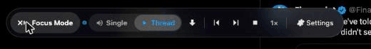
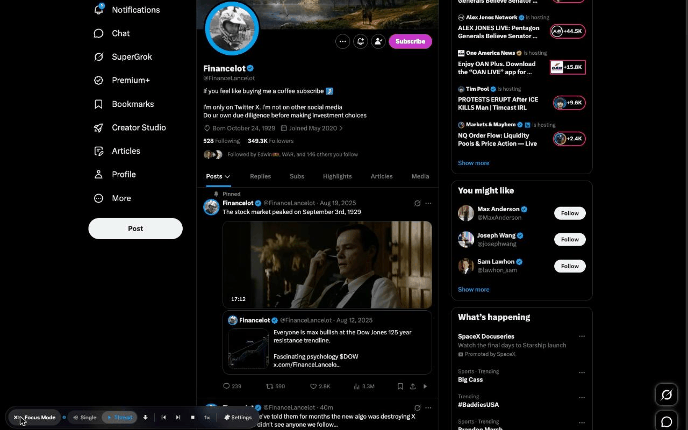
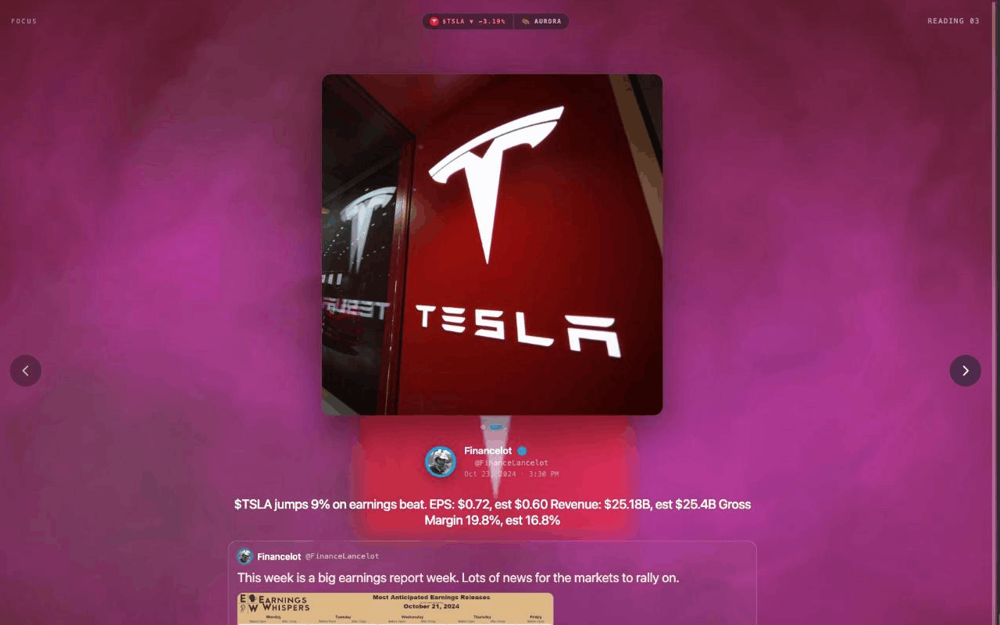

Welcome to Xpeaker
Thanks for installing — here's the 60-second tour.
Read your timeline out loud — one click, right on x.com.
Everything runs on your device: no account, no servers, no tracking.
The 10-second version
Open x.com and click the ▶ read button Xpeaker adds to every post's action bar. That's it — it reads the post aloud. Prefer keys? Alt+R reads the post in view.

Get the good voices
Xpeaker speaks through a free companion, Supertonic Text-to-Speech Voices — natural, neural voices that also run entirely in your browser. Install it for the good stuff.
Without it, Xpeaker falls back to your browser's built-in voices — they work, but they're the robotic kind. This is the one step most people skip and then wonder why it sounds off.
The control dock
A small Xpeaker mark sits bottom-left of x.com. Hover it to unfold the controls — Single / Thread, direction, prev / next / stop, speed, and ⚙ Settings.

Thread mode
Flip to Thread (or press Alt+T), click a post, and Xpeaker reads from there onward — auto-scrolling down your timeline and skipping ads.

Focus Mode
Click the Xpeaker mark and pick a direction to drop into Focus Mode — a full-screen, distraction-free reader. One post at a time over a live animated background. Alt+Space pauses, the ‹ › edge arrows move, and a heart in the corner lets you like / reply without leaving.
The pill at the top shows the post's mood, a live ticker when a post mentions a $cashtag, and the background's name — click that name to cycle through backgrounds.

Make it yours
Open ⚙ Settings for a default voice + per-author voices, reading speed, karaoke word-highlight captions, keyboard style (Default or Vim-ish), pause-on-video, and Focus-Mode video sound.
Turn on the Mood ring to colour the Focus background by each post's emotion — it runs a small classifier entirely on your device (one-time ~83 MB download, opt-in; no text ever leaves your machine).
Keyboard shortcuts
Two styles, switchable in Settings. All are Alt + the key.
| Action | Default | Vim-ish |
|---|---|---|
| Read post in view | Alt+R | Alt+P |
| Thread mode | Alt+T | Alt+T |
| Next / back post | Alt+N / B | Alt+J / K |
| Pause (Focus) | Alt+Space | Alt+Space |
| Slower / faster | Alt+↓ / ↑ | Alt+H / L |
| Stop | Alt+S | Alt+S |
Private by design
Everything runs on your device — no account, no servers, no analytics, and your posts never leave your machine. The only network request Xpeaker ever makes is the optional, one-time mood-ring model download.